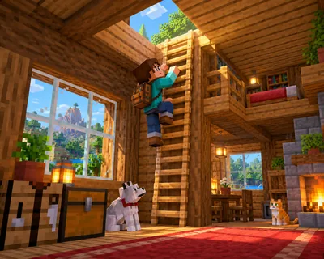

建造自己的家 难度 · 入门 约 32 词
A Way Up the Wall
用梯子通往小阁楼

这篇讲什么
小房子里，也能留出向上的通路。
核心词:ladder —— 在画面里找到它,再把单词念出来。
A ladder gives you a way up without a wide staircase.
游戏里会用到的一句,读两遍再抄一次。
建造自己的家 难度 · 入门 约 32 词
用梯子通往小阁楼

小房子里，也能留出向上的通路。
核心词:ladder —— 在画面里找到它,再把单词念出来。
A ladder gives you a way up without a wide staircase.
游戏里会用到的一句,读两遍再抄一次。